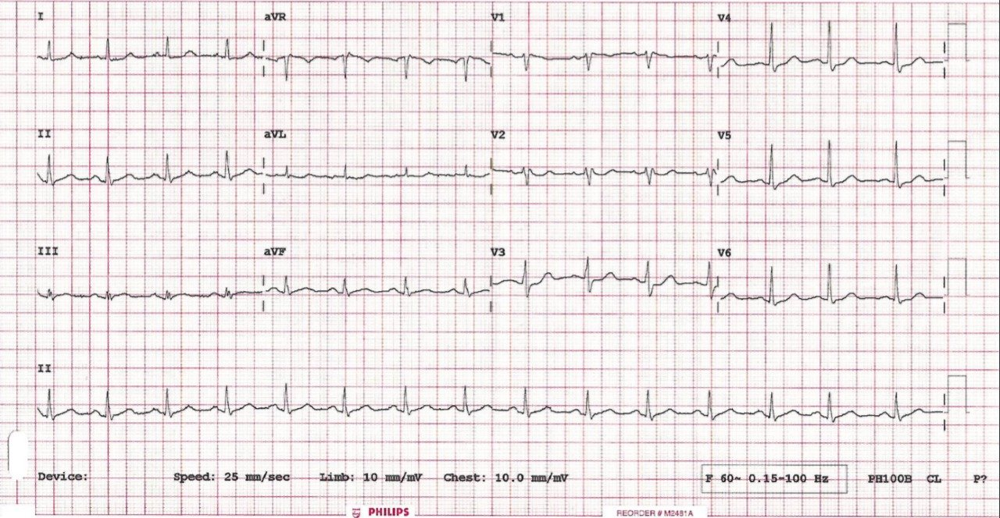
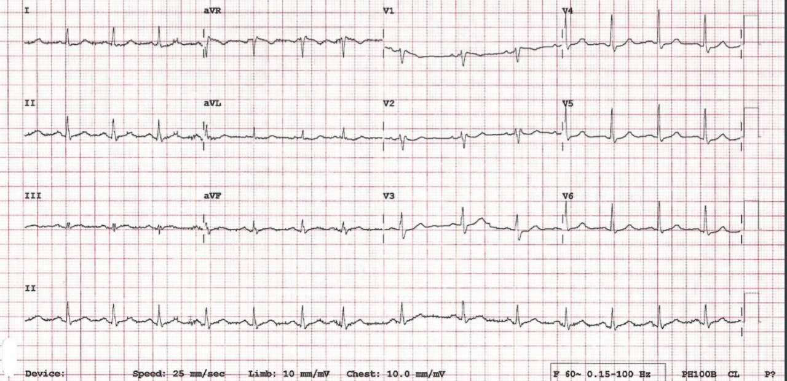
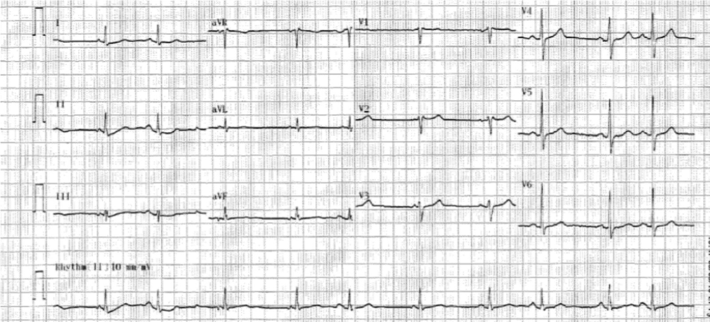
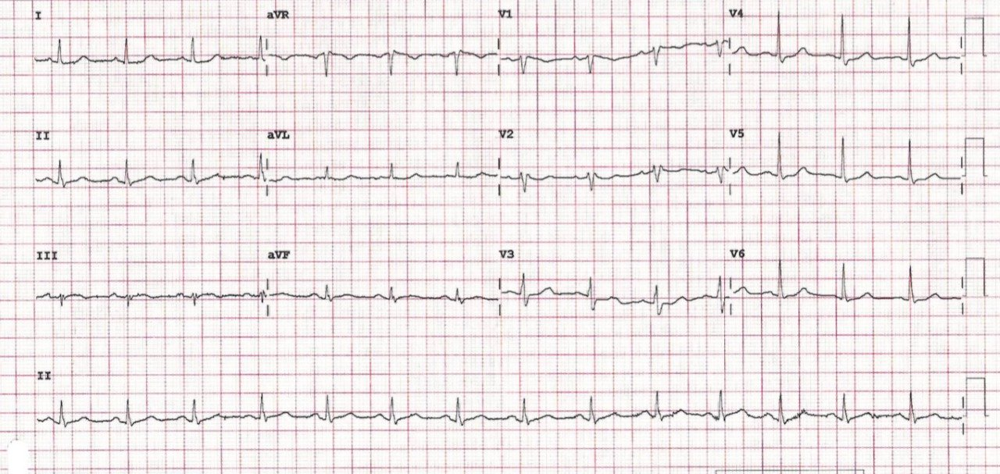
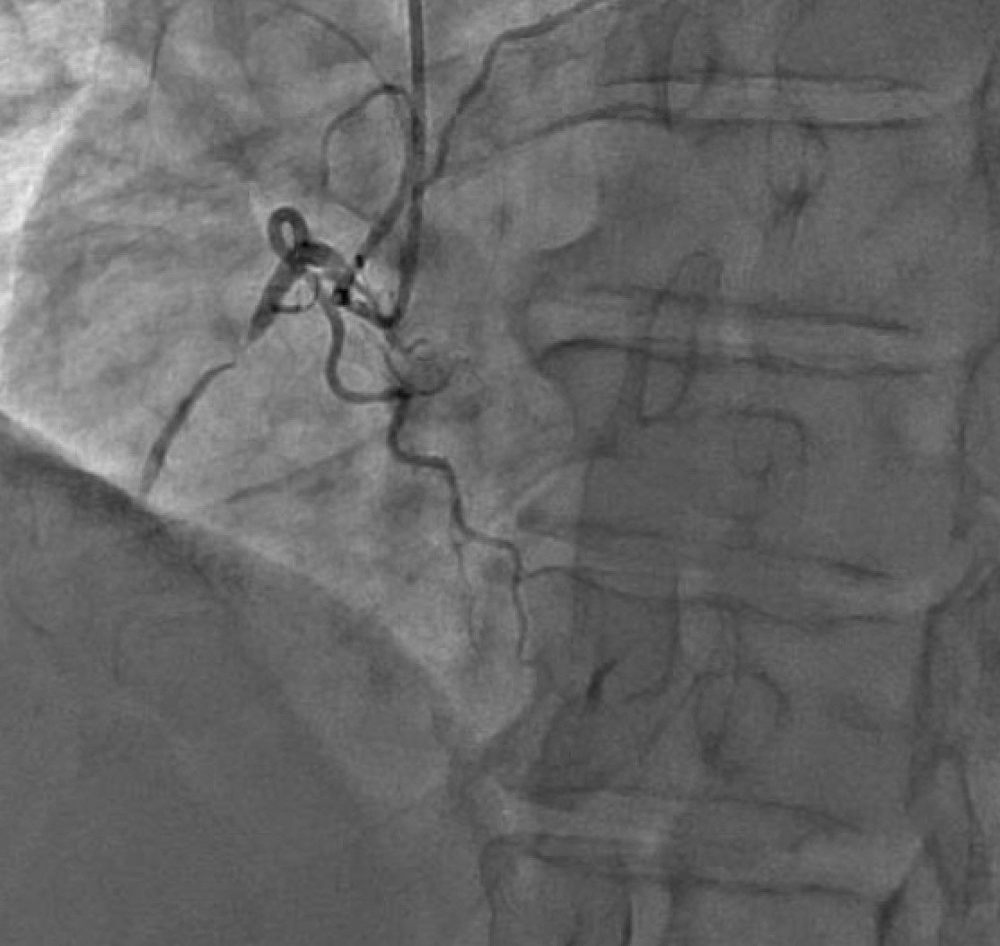
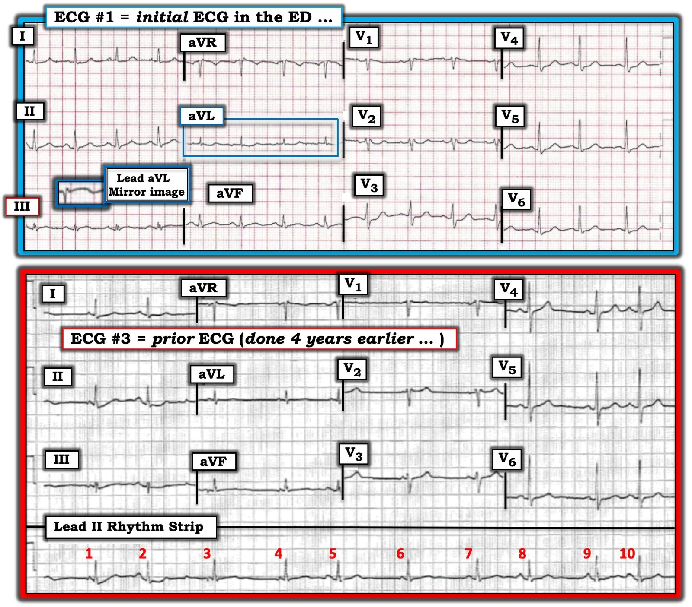

30/09/2019 — Một người đàn ông 70 mấy tuổi đau ngực khi đang đạp xe
Bản dịch tiếng Việt của bài "A man in his 70s with chest pain during a bike ride" – Dr. Smith’s ECG Blog. Giữ nguyên toàn bộ 7 hình ảnh của bản gốc.
Ca bệnh do Ryan Barnicle MD viết và gửi, Pendell Meyers biên tập
Trong lúc đi nghỉ trên một hòn đảo ngoài khơi bờ biển đông bắc, một người đàn ông khoảng 70 tuổi, khỏe mạnh, đến trung tâm y tế của đảo để được đánh giá vì đau ngực. Cơn đau ngực bắt đầu khoảng một giờ trước khi đến, trong lúc đạp xe. Đó là cơn đau âm ỉ liên tục ở bên trái ngực, buộc ông phải dừng đạp xe và gọi xe cấp cứu. Cơn đau lan lên hai cánh tay trên. Kèm theo buồn nôn nhưng ông phủ nhận khó thở, chóng mặt và đau đầu.
Ông kể rằng ngày hôm trước ông cũng đã bị cơn đau ngực giống hệt như vậy, lúc có lúc không. Cơn đó bắt đầu khi ông leo một dãy cầu thang dài từ bãi biển lên bãi đỗ xe. Cơn đau lan lên hai vai suốt buổi tối và cả đêm nhưng không khiến ông đi khám.
Bệnh nhân cho biết ông có tiền sử tăng huyết áp lâu năm được kiểm soát tốt, tuân thủ dùng thuốc ức chế men chuyển (ACE-inhibitor). Ông cũng được điều trị rối loạn cương dương nhưng gần đây không dùng thuốc nào. Ông chưa từng bị nhồi máu cơ tim và nhớ là có một nghiệm pháp gắng sức “âm tính” trong vài năm gần đây.
Dấu hiệu sinh tồn lúc đến: HR 77, BP 148/95, RR 16, SpO2 95%. Ông rõ ràng đang khó chịu.
Dưới đây là điện tâm đồ đầu tiên của ông, ghi trong vòng vài phút sau khi đến.


Bình luận của Meyers: Ryan nhắn cho tôi điện tâm đồ này mà không kèm thông tin gì, và tôi trả lời: “Ca khó. Tôi lo ngại OMI dưới-sau nhưng chưa bị thuyết phục. Nên ghi các điện tâm đồ liên tiếp để hỗ trợ. Lúc ghi điện tâm đồ này bệnh nhân có đang đau không? Kể thêm cho tôi đi.”
Sau đó tôi gửi chính điện tâm đồ này, không kèm bất kỳ bối cảnh nào, cho Dr. Smith và ông trả lời: “OMI thành dưới cực kỳ kín đáo, và cả thành sau. Ca hay.”
Trước hết, có lẽ bạn sẽ nhận thấy ST chênh xuống một lượng nhỏ ở V2-V6, có vẻ tối đa ở V3-V4. Ở I và aVL còn kín đáo hơn. Hình thái ở V2 cũng đáng lo ngại, có vẻ như đoạn ST đang bị đẩy xuống, giống như ST chênh xuống. Ở chuyển đạo III có ST chênh lên (STE) ở mức nhỏ nhất có thể, khó đo vì điện thế rất thấp. Những dấu hiệu này gợi ý thiếu máu cục bộ thành dưới, có thể kèm tổn thương thành sau.
Điện tâm đồ ghi lại vài phút sau (một bản được trình bày dưới đây) không có thay đổi đáng kể.


May mắn là chúng tôi đã lấy được, nhanh đến bất ngờ, một bản sao qua fax của điện tâm đồ cũ duy nhất được biết của ông từ bác sĩ tim mạch của ông (ở một bang khác). Bản đó ghi từ bốn năm trước.


Bạn sẽ nhận thấy đây về cơ bản là một điện tâm đồ không có gì đáng chú ý, ngoại trừ vài PAC. Điều này làm tăng mối lo của chúng tôi rằng các dấu hiệu trên điện tâm đồ ban đầu là thật. Cùng lúc đó, các xét nghiệm tại chỗ của ông có kết quả, đáng chú ý nhất là Troponin-I tim 8,7 ng/mL.
Ca bệnh được trao đổi với bác sĩ nội trú chuyên khoa tim mạch (fellow) ở trung tâm tuyến cuối gần nhất và đã sắp xếp chuyển bệnh nhân bằng trực thăng cấp cứu y tế (HEMS). Dự kiến ông sẽ đến trung tâm tuyến cuối trong vòng 60 phút kể từ cuộc gọi. Ông được cho liều nạp aspirin, ticagrelor và heparin. Không có rối loạn nhịp nào xảy ra trên đường chuyển.
Điện tâm đồ của bệnh nhân lúc đến khoa cấp cứu được trình bày dưới đây. Lưu ý ST chênh lên ở III rõ hơn một chút, với hình thái thiếu máu cục bộ rõ nét hơn.


cTnI ban đầu của ông tại bệnh viện tiếp nhận là 27 ng/mL, và sau đó không đo troponin thêm. Ông được đưa cấp cứu vào phòng thông tim và phát hiện bệnh mạch vành nhiều nhánh với tổn thương thủ phạm gần tắc hoàn toàn ở RCA, có thể đã tái tưới máu. Ban đầu dòng chảy TIMI 2 chậm, sau can thiệp mạch vành qua da (PCI) với stent phủ thuốc 18mm thì dòng chảy nhanh.


Theo những gì chúng tôi biết, bệnh nhân hồi phục tốt. Đáng tiếc là không có siêu âm tim vì bệnh nhân đã tự xin xuất viện để về bang nhà trước khi kịp làm. Không có thêm thông tin theo dõi nào.
Những điểm cần học:
Mọi thứ đều tương xứng. Một phức bộ QRS rất nhỏ chỉ có thể tạo ra một lượng STE rất nhỏ. Bệnh nhân này bị tắc hoàn toàn RCA mà STE nhìn thấy được lại nhỏ nhất.
Điện tâm đồ nền và các điện tâm đồ liên tiếp giúp bạn nhận ra OMI dễ hơn nhiều.
Nếu dùng mô hình STEMI thì bệnh nhân này đã bị chậm trễ đáng kể, điều tương ứng với tỷ lệ tử vong và bệnh tật tăng gấp đôi của các ca tắc mạch NSTEMI ghi nhận trên hơn 50.000 đối tượng trong các thử nghiệm NSTEMI.

===================================
BÌNH LUẬN CỦA TÔI, bởi KEN GRAUER, MD (30/9/2019):
===================================
Chúng tôi xin CẢM ƠN Dr. Ryan Barnicle đã chia sẻ ca này — với phần bình luận xuất sắc về các đặc điểm mấu chốt của Dr. Meyers. Các dấu hiệu điện tâm đồ trong ca này kín đáo — và đáng được nhắc lại. Tôi xin bổ sung thêm vài điểm — tập trung vào điện tâm đồ thứ 1 và thứ 3 được trình bày ở trên trong ca này.
- Cho rõ ràng — tôi đã đặt 2 bản ghi này cạnh nhau trong Hình 1.


SUY NGHĨ CỦA TÔI: Chính vì các dấu hiệu điện tâm đồ kín đáo — nên chúng ta cần đặc biệt chú ý đến các chi tiết trong ca này:
- Bệnh sử cho biết bệnh nhân này đến cơ sở y tế để “được đánh giá vì đau ngực”— và các triệu chứng này đã bắt đầu ~1 giờ trước khi được khám. NHƯNG — bệnh sử cũng cho biết ông đã bị cơn đau ngực giống hệt vào ngày hôm trước. Thời gian triệu chứng kéo dài ít nhất 24 giờ có thể giải thích việc các thay đổi điện tâm đồ trông không quá cấp tính.
Khi đối mặt với các thay đổi điện tâm đồ kín đáo đến mức gần như khiến tôi tự hỏi LIỆU chúng có thật không — tôi thích làm thế này: i) Tìm 1 hoặc 2 chuyển đạo mà tôi BIẾT CHẮC là bất thường; rồi sau đó, ii) Xem tôi có thể tìm được BAO NHIÊU chuyển đạo khác cũng có bất thường kín đáo. Ở một bệnh nhân có đau ngực đáng lo ngại — càng nhiều chuyển đạo biểu hiện dấu hiệu bất thường, dù kín đáo — thì các dấu hiệu này càng có khả năng là thật.
- Dấu hiệu điện tâm đồ mà tôi BIẾT CHẮC là thật trên điện tâm đồ #1 là hình ảnh soi–gương của sóng ST-T ở chuyển đạo III và aVL. Chúng tôi thường nhắc đến mối tương quan soi gương gần như kỳ diệu của sóng ST-T ở chuyển đạo III và aVL — mà khi có mặt, có nghĩa là OMI thành dưới cấp cho đến khi bạn chứng minh được điều ngược lại (Xem Bình luận của tôi trong bài ngày 9/8/2018 SSmith Blog Post). Mặc dù ST chênh lên rất ít (gần như không nhận thấy được) ở chuyển đạo III của điện tâm đồ #1 — hình ảnh soi gương của đoạn ST dạng vòm (cấu hình “mặt mếu”) ở chuyển đạo III đúng là thấy được ở chuyển đạo aVL. Khi bạn lật ngược đoạn ST dạng lõm (scooped) ở chuyển đạo aVL (như tôi đã làm trong ô phóng to đặt ngay trên chuyển đạo III ở điện tâm đồ #1) — Chẳng phải hình dạng đoạn ST dạng vòm này giờ trông gần như giống hệt ST dạng vòm (coving) mà chúng ta thấy ở chuyển đạo III sao?
- Ủng hộ cho việc ST dạng vòm ở chuyển đạo III của điện tâm đồ #1 là thật — Chẳng phải chúng ta cũng thấy chính hình dạng vòm này ở chuyển đạo aVF sao?
- Chuyển đạo bên cao còn lại ( = chuyển đạo I) — cũng cho thấy đoạn ST dẹt và chênh xuống nhẹ-nhưng-thật (0,5 mm).
- Dr. Meyers đã nêu bật điểm J chênh xuống nhẹ-nhưng-thật ở các chuyển đạo từ V2 đến V6. Ngay cả trước khi tìm được điện tâm đồ cũ ( = điện tâm đồ #3) — điểm cần nhấn mạnh là điểm J ở các chuyển đạo ngực này trông như hơi chênh xuống dưới đường nền đoạn PR, dù mức chênh xuống này là rất ít.
- Tổng hợp lại tất cả — Ở bệnh nhân có đau ngực đáng lo ngại này, trên điện tâm đồ #1 chúng ta có thay đổi ST-T dạng soi gương ở chuyển đạo III và aVL + bất thường ST-T kín đáo-nhưng-thật ở không dưới 9 trong 12 chuyển đạo (tức là các chuyển đạo I, III, aVL, aVF và V2-đến-V6). Thêm vào đó là việc triệu chứng đã bắt đầu từ ít nhất 24 giờ trước — và các dấu hiệu điện tâm đồ kín đáo-nhưng-thật này gợi ý một biến cố gần đây cho đến khi chúng ta chứng minh được điều ngược lại.
- Việc có được điện tâm đồ nền của bệnh nhân (ghi 4 năm trước đó) — càng ủng hộ rằng các dấu hiệu trên điện tâm đồ #1 là mới. Như Dr. Meyers đã nêu — đoạn ST dạng lõm ở chuyển đạo V2 của điện tâm đồ #3 rõ ràng cao hơn so với ở điện tâm đồ #1 — và, điểm J ở các chuyển đạo V3-đến-V6 của điện tâm đồ #3 không chênh xuống. Mối tương quan soi gương kỳ diệu của sóng ST-T ở chuyển đạo III và aVL cũng không thấy trên điện tâm đồ nền.
- Vượt ra ngoài phần cốt lõi: Bạn có để ý rằng sóng R trở nên chiếm ưu thế ở chuyển đạo V3 của điện tâm đồ #1 — trong khi trên bản ghi nền của bệnh nhân, vùng chuyển tiếp xảy ra muộn hơn. Chuyển tiếp sớm (với sóng R chiếm ưu thế ngay từ chuyển đạo V3) có thể là một dấu hiệu khác của nhồi máu thành sau ở bệnh nhân này.
CÂU HỎI: Nhịp trên Điện tâm đồ #3 là gì?
- GỢI Ý: Nếu bạn nói là nhịp xoang hoặc nhịp xoang kèm PAC — Hãy xem lại!
TRẢ LỜI: Chẳng phải kích thước và hình thái sóng P, cũng như khoảng PR và khoảng R-R, thay đổi ở gần như mọi nhát trên dải nhịp chuyển đạo II dài sao? Sóng P đi trước các nhát #1, 3 và 4 có khía — sóng P đi trước nhát #6 rất nhỏ — sóng P đi trước các nhát #8 và 9 nhọn — và biên độ sóng P không cố định ở các sóng P dương, tròn còn lại. Tôi không thấy 2 sóng P liên tiếp nào có cùng hình thái. Với mức nhiễu rất ít trên bản ghi này — tôi tin rằng sự thay đổi hình thái sóng P này là thật!
- ĐIỀU CỐT LÕI: Đây không phải là nhịp xoang. Nó cũng không phải là ổ tạo nhịp lang thang — vì trong rối loạn đó, vị trí tạo nhịp nhĩ thay đổi từ từ. Thay vào đó, với sự thay đổi hình thái sóng P và khoảng PR từ nhát-này-sang-nhát-khác — điều này gợi ý MAT (nhịp nhanh nhĩ đa ổ — Multifocal Atrial Tachycardia) — ngoại trừ việc tần số rõ ràng không nhanh!
- Một số nhịp tim không đọc sách giáo khoa! Quan sát hiện tượng này trong nhiều năm — tôi nhận thấy rằng thay vì phân loại trắng-hoặc-đen cho các nhịp như ổ tạo nhịp lang thang; nhịp xoang kèm nhiều PAC; và MAT — thì các rối loạn nhịp này nằm trên một phổ liên tục. (BẤM VÀO ĐÂY — để xem bàn luận chi tiết của tôi về chủ đề này).
- Về mặt lâm sàng — nhịp mà chúng ta thấy ở chuyển đạo II dài của điện tâm đồ #3 diễn biến tương tự MAT, dù không có nhịp nhanh. Phần lớn bệnh nhân bị MAT có bệnh phổi lâu năm. Thay vì dùng thuốc chống loạn nhịp — tối ưu hóa chức năng phổi là cách điều trị tốt nhất. Vượt ra ngoài phần cốt lõi: Có một số dấu hiệu trên điện tâm đồ #3 phù hợp với bệnh phổi (tức là hình ảnh blốc nhánh phải không hoàn toàn (IRBBB); điện thế tương đối thấp ở các chuyển đạo chi; nhiều sóng S [tức là ở các chuyển đạo I,II,III và ở tất cả các chuyển đạo ngực]). Nhịp mà chúng ta thấy ở chuyển đạo II dài không phải là nhịp thường gặp. Vì vậy — tôi muốn biết liệu bệnh nhân này có bệnh phổi, tiền sử hút thuốc, hay một rối loạn toàn thân đáng kể nào khác vào thời điểm ghi điện tâm đồ #3 hay không …
- ĐIỂM THEN CHỐT (PEARL): Trong suốt hơn 3 thập kỷ tôi giảng dạy đọc điện tâm đồ — lỗi thường gặp nhất mà tôi thấy ngay cả những người đọc có kinh nghiệm mắc phải — là bỏ sót một nhịp không phải nhịp xoang. Cám dỗ rất lớn là mặc định đó là nhịp xoang, rồi nhảy ngay tới các dấu hiệu “thú vị” trên bản ghi. Tôi cam đoan, “con mắt đã qua đào tạo” của bạn sẽ mất không quá 3 giây để bắt đầu đọc từng mỗi điện tâm đồ bạn nhận được bằng một cái LIẾC NHANH qua dải nhịp chuyển đạo II dài bên dưới 12 chuyển đạo — để đánh giá LIỆU mỗi phức bộ QRS có được đi trước bởi một sóng P dương với khoảng PR cố định hay không. NẾU không — thì đó không phải là một nhịp xoang đơn thuần …
Chúng tôi xin CẢM ƠN Dr. Barnicle và Dr. Meyers đã trình bày ca này!